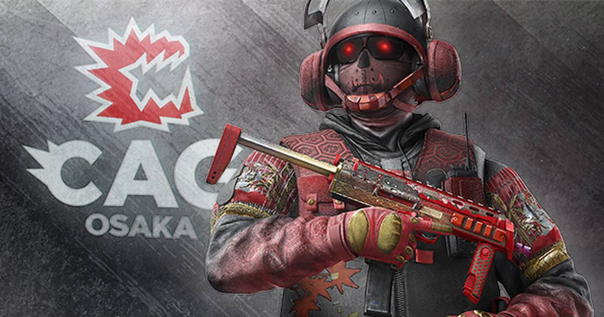

Ubisoft makes it official: the Tubarão-Noor combo is banned for the rest of the Osaka Major
Ubisoft has ruled on the Rainbow Six Siege combo that dominated the BLAST R6 Major Osaka's opening days: the Tubarão-Noor gadget interaction is banned until the end of the event, and any team that uses it loses the round.

The ruling
The BLAST R6 Major Osaka had a problem before it really got started, and on Wednesday Ubisoft finally put it in writing.
The interaction between Tubarão's Zoto Canister and Noor's Horus Lance is banned from now until the end of the event. Any team confirmed using it loses the round. The ruling is not retroactive — results from the opening days stand — and neither operator is banned. Tubarão and Noor are still playable; their gadgets just cannot be used together anymore.
The ruling comes under section 4.6 of the Osaka Major rulebook, and it closes a saga that began the moment the tournament opened.
How it worked
Here is the combo: Tubarão's Zoto Canister freezes both a Horus Lance and a hard breach gadget. When the freeze ends, the Lance disables the gadget it was touching. The result is a hard-breach denial that is, on paper, perfectly legal — and brutally effective.
The players knew what it was the second they saw it. On the tournament's opening day, teams raised it with BLAST, and BLAST confirmed with Ubisoft that the interaction was intentional — not a bug. That is where the trouble started. If Ubisoft knew the interaction existed, the players wanted to know why nobody said anything before the Major began. The patch notes said nothing. The teams found out on stage.
The gentlemen's agreement
Four days ago, the players took it into their own hands. All twenty teams at the Major agreed — a voluntary gentlemen's agreement, announced publicly by Team Liquid in-game leader Felipe "FelipoX" Lucia on November 7 — not to use the interaction at all. It was, by most accounts, the first agreement of its kind in Rainbow Six Siege esports in years.
Now the agreement is a rule. Ubisoft's official ruling, published Wednesday, matches the players' position almost exactly: banned from November 11 until the end of the event, round loss for confirmed use, operators still playable separately.
It is a strange way for a major to be decided — the players agreed on the competitive integrity of the tournament before the publisher did — but the important part is that the question is settled before the weekend. The grand final is this weekend, and the Season 4 update gets its reveal there too. The players can finally go back to playing the game instead of arguing about it.
Sources
• Rainbow Six Osaka: Tubarão-Noor Combo Gets Official Ruling (Insider Gaming)
• BLAST R6 Major Osaka: The Tubarão-Noor Combo Is Now Banned (gz1.games)
Gear up: Razer — mice, keyboards, headsets and laptops.